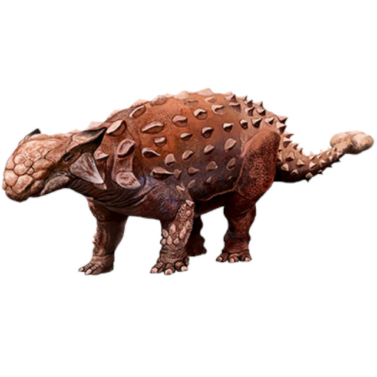

Perhaps the most famous Herbivorous Dinosaur, Triceratops is easily distinguished by its Three horns and head frill. Living in North America during the late Cretaceous, about 68 to 66 million years ago, Triceratops measured around 26 to 30 feet long and weighed up to 10 tons. It lived alongside Tyrannosaurus Rex, and fossil remains suggest that battle between the species wasn’t uncommon.

One of the earliest Dinosaur species to be discovered, Iguanodon was named in 1825 and was the second species of Dinosaur to be named, following Megalosaurus the year prior. Living in Europe during the late Jurassic and early Cretaceous, about 126 to 122 million years ago, Iguanodon grew to be 30 to 36 feet long and could weigh around 5 tons. It could transition between bipedal and quadrupedal motion, and its forearms featured large thumb spikes, which were possibly used for defense against predators, as well as long prehensile fifth fingers able to forage for food.
My personal favorite Dinosaur, the Ankylosaurus lived in North America during the late Cretaceous, about 68 to 66 million years ago. Growing between 20 to 26 feet long, with weight estimates between 5 and 8 tons, Ankylosaurus was a heavily armored dinosaur. Its body was covered in hardened scales called Osteoderms, and its tail ended in an Osteoderm formation resembling a club. Studies have suggested that the club would have been a powerful weapon against predators like Tyrannosaurus, as one good hit would likely have shattered bone.
